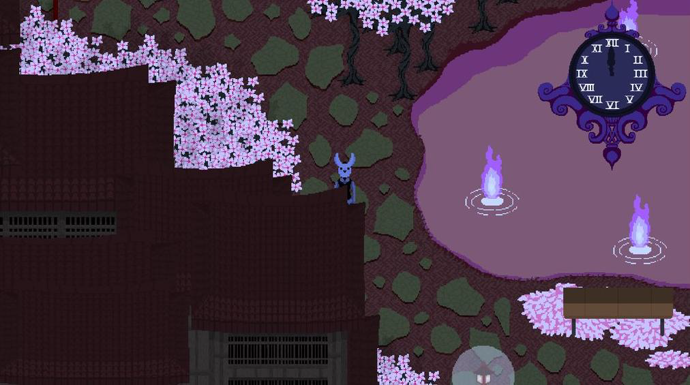
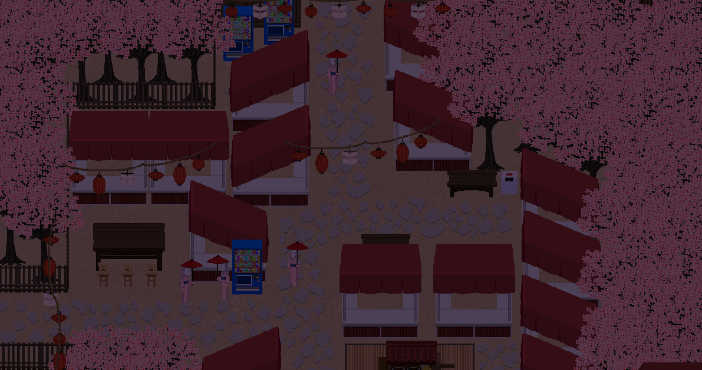
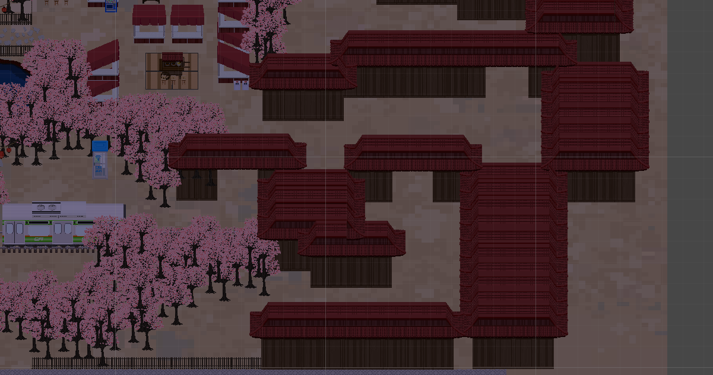
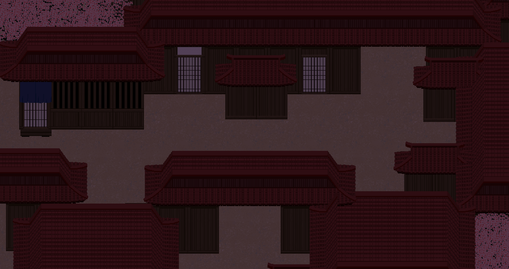
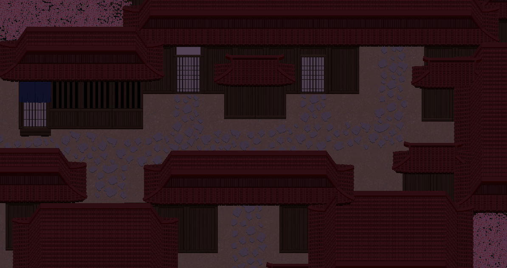
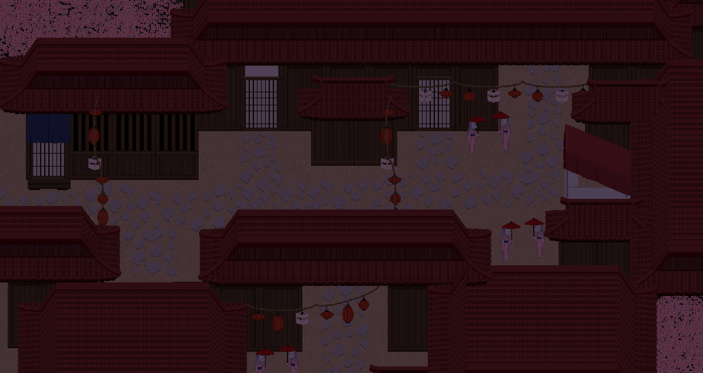

Construction of Mari’s Dungeon
It's the late 90s. Kouhei Kadano has failed to get another light novel published. The publishers praise his writing but they still all tell him the same thing, “No one will buy this!”
With this mantra fixed in his mind and a heart filled with both jealousy and appreciation of what publishers consider popular and marketable, Kadano creates the Boogiepop and Others series. Boogiepop, as described by Kadano himself at the end of one of his novels, is not just the novel itself but also an ideology which represents the middle ground between “boogie” sensibilities, describing personal, polarizing, and highly niche works and “pop” works which are generally designed to have mass-appeal and be easily accessible works.
In this sense, our game uses this as a key tenant, and is designed around the “boogiepop” sensibilities of trying to take one's own personal preferences and tastes and add in the right elements that will make them more accessible without losing what makes it special to you in the first place.
Dungeon Philosophy
As an extension of this idea, each dungeon in Rainfall is meant to be the capstone of a character’s arc. They are designed to be a manifestation of the character’s view of the world and takes the form of a distortion of Iriya. While not an exact one-to-one corruption of the city, certain characteristics should influence the setting of the stage, its color palette, and its denizens.
As an example, in the Tutorial Dungeon, we tried to realize this through portraying a city that had been consumed by nature and long abandoned. It was meant to be heavily isolated with the citizens of Iriya being present but turned to stone to give the feeling of a city filled with people and at the same time not. The palate was dominated by whites, grays, and greens and the stage itself was designed to be entirely linear. This area is meant to represent the distorted viewpoint of Jin’s initial feelings, those of self-isolation and being around people but never connecting nor speaking with them.
Mari’s Dungeon Conception
In constructing Mari's Dungeon, it was important for us to begin with a strong foundation. For this purpose we decided to create a foundation that was built on contrast. Blending together disparate concepts that would act as foils for one another and strengthen the foundation as a whole. One of the inspirations for this idea came from how the early 2000's anime Samurai Champloo constructed its setting.
Samurai Champloo was part of the Spring 2004 simulcast in Japan and featured an anachronistic blend of Edo Era Samurai and modern pulp sensibilities including hip-hop and bohemian cultural aesthetics. In a similar way to how director Quentin Tarantino is known for blending different aesthetics, like in the revenge samurai movie Kill Bill or his take on the Spaghetti Western in Django Unchained, Samurai Champloo aims to mix both of its inspirations together and have them serve as foils to each other. The absurdity of some of the filler episodes of Champloo, like the introduction of zombies or having samurai compete in a baseball tournament, formed the defining features of the show and exhibited the same Tarantino and boogiepop sensibilities that Kadano sought and that we too want to present our own spin on.
Specifically for Mari, we wanted her dungeon to exist in pure contrast to the Tutorial Dungeon.
Initially we thought of nonlinearity. The first goal then was to design a completely non-linear dungeon that was held together by a set of scenes that would guide the player to the various key parts of the area. When presented with nonlinearity we were drawn towards the idea of a spin on Disneyland but incorporating a gambling aesthetic into it where you’d be taking Mari on a date throughout the park. However, a pure theme park felt too disparate from the idea of a “distorted city” and lacked some of the boogiepop feelings we wanted to emulate.
As a result, we decided to take on a remix of this “Gambling Theme Park” with one of our Last Hymn Areas the Cherry Blossom Park.
This Cherry Blossom Park was an area inside of Last Hymn that was a huge, feudal-style park merged with a graveyard in which many ghosts roamed about. It featured what we called the “Edo Favela” which was a stack of wooden buildings with Chinese hip and gable roofs iconic to that era, and was used for breaking up the paths and giving it the aesthetic of a lived in area. With this as our base we started on an upgraded version of this area merged with a more modern Gambling tone.
A modern Vegas setting merged with Edo shrines and architecture allows for both aesthetics to blend together and enhance each other. While the idea of an Edo era village may be considered “Too Eastern” or “Too Obscure”, by blending in the elements of the city, the park, and the neon lights we can present a unique location while having a familiar locale.
Environmental Storytelling
Another technique we tried to use inside Mari’s dungeon was working on our environmental storytelling. While there are quite a few definitions of what this means, to us if this area is supposed to be a theme park then the different key areas for scenes and boss encounters are our rides. However, to keep the park interesting we need to have the connecting areas between these rides be visually interesting and distinct as landmarks as well.
What we chose to go with was creating sub areas that are all uniquely themed and intersect the paths between the three casinos that serve as the goal of the area. Pictured above is an example of one of these areas, a festival area with different food and game stalls. In the final version of this dungeon these will all be filled with various items but for now serves as a landmark for players and visually distinct from the other parts of the area.
Dungeon Design Process
Whenever we design areas, we always start out with the “blocking” of the map. This usually includes taking a couple of pieces, in this case a standard rectangular wooden building and a group of Cherry Trees, and carving out the map. This is because even without any detail or other objects, the map should still be fun to move around. While detailing in the map can certainly hide level design flaws, the end result will always be less satisfying than a map that was fun to interact with when completely blank.
During this phase some of the “key areas” will also be filled in like the save points, the dungeon entrance, and entrances to other sub-areas. Again this is purely to mimic what movement around the dungeon will be like.
After the initial blocking, the next step is to add in various wall details like doors or windows and create additional building layouts beyond the basic rectangle. This variance is key in establishing the aesthetic of the area while also helping to ensure the area is memorable for the player. For 2D maps in specific, layering is one of the easiest way to add depth to a map and give it a sense of scale. In the sequence of images below you can see how the progression in adding in different sections of the map that are below, above, and at the same level as the player are necessary for creating an interesting looking area.
After the initial blocking I filled in some of the wall details and added in all of the house shapes instead of just using the same rectangular block.
Then I wanted to cover up the ground texture as much as possible so we took the idea of the stone path from the Cherry Blossom Park and applied it here. It also outlines some other possible paths that the NPCs around the map will take into the other buildings that are inaccessible to the player.
Next we added in the overhead elements, mainly accomplished through the strings of lanterns that will fill the map and be lit up. These also serve to divide up the blank space between the different blocks without interfering with player movement. From here we can continue filling in with further doodads like the NPCs on the side, trash cans, etc. Once we have the base layers setup as shown above the doodads will “complete” the area and provide different color backdrops to main red, pinks, and browns of the map.